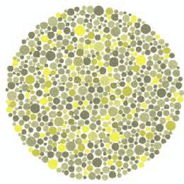
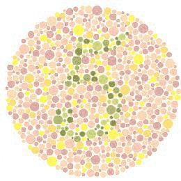
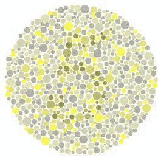

Image Correction for the Partially Color-Blind
This project was originally made for CPE 462, a class I took on Image Processing. The script implements a form of color-correction on images called the "Dalton Method". The purpose of this correction is to make certain images easier to see for the color-blind.
Click this to see the code for this project

Image as seen by the colorblind (Protanopes)
Image after applying the Dalton method
Daltonized Image as seen by the Colorblind (Protanopes)
